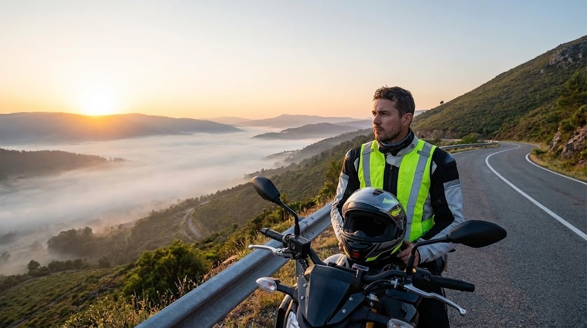
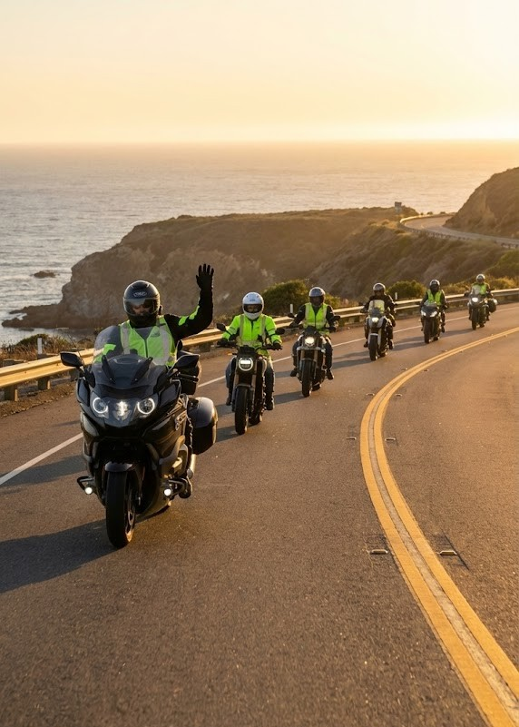

Riding is 10% physical and 90% mental. Build the habits of a pro, master the unspoken rules of the road, and cultivate the "defensive" mindset required to survive and thrive.
Being a "good rider" isn't just about how fast you take a corner; it's about the decisions you make before you even turn the key. Consistent habits lead to long-term safety and a better reputation for the entire biking community.
Develop the habit of scanning 12 seconds ahead. Never focus on just one car; watch the entire traffic pattern and identify potential escape routes.
All The Gear, All The Time. No exceptions for "quick trips." Wearing proper gear should be as automatic as putting on your seatbelt in a car.
In high-traffic areas, keep two fingers covering the brake and clutch. This reduces your reaction time by half a second—which can be the difference in an emergency.
Always ride in the position (Left, Center, or Right) that makes you most visible to drivers and gives you the largest "buffer zone" of space.
The road is not a race track. Never feel pressured to keep up with faster riders. Ride your own ride and stay within your personal skill level.
Acknowledge fellow riders. This small habit builds community and reminds us that we are all looking out for one another on the road.

Riding with others requires a different set of habits. Communication and discipline are key to ensuring the group stays together without causing chaos for other road users.
Adopt these 4 mental habits to stay invisible to danger.
Ride as if every car on the road cannot see you. Never assume a driver will stop at a sign or stay in their lane. This keeps you proactive rather than reactive.
To predict a car's movement, watch their front tires—not the car's body. The tires will tell you they are turning long before the car actually shifts.
Always have an "out." If the car in front slams on its brakes right now, where will you go? Habitually look for gaps in traffic or shoulders you can use.
After every ride, spend 30 seconds thinking about one "close call" or mistake you made. Acknowledge it and decide how to avoid it next time.